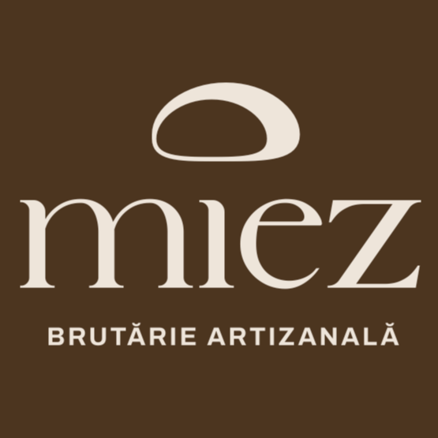
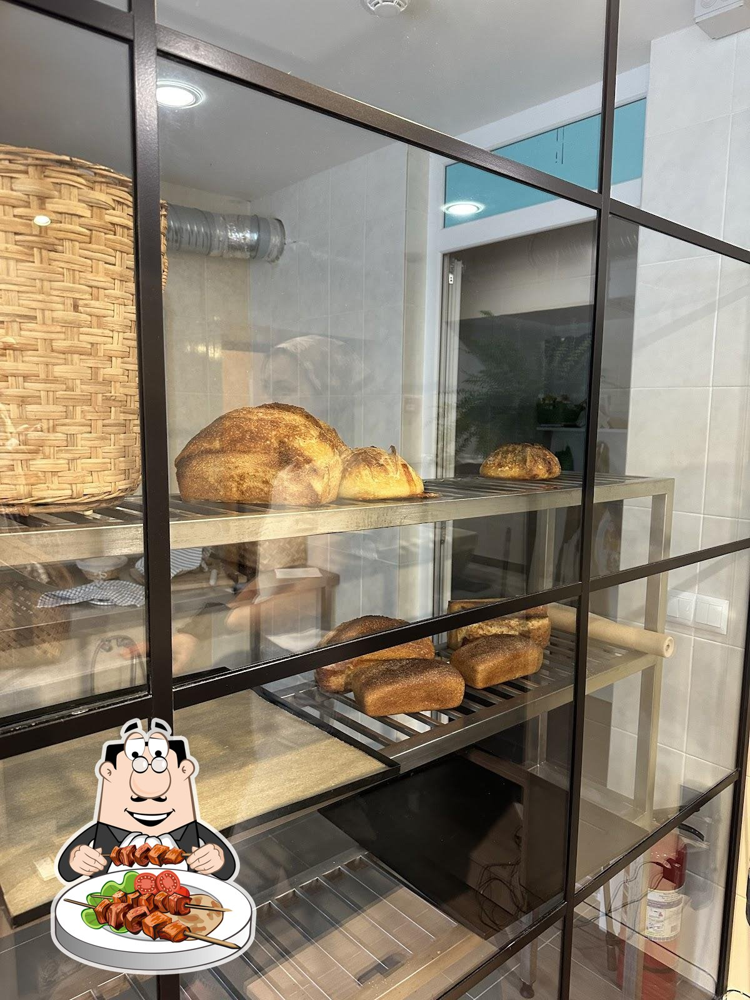
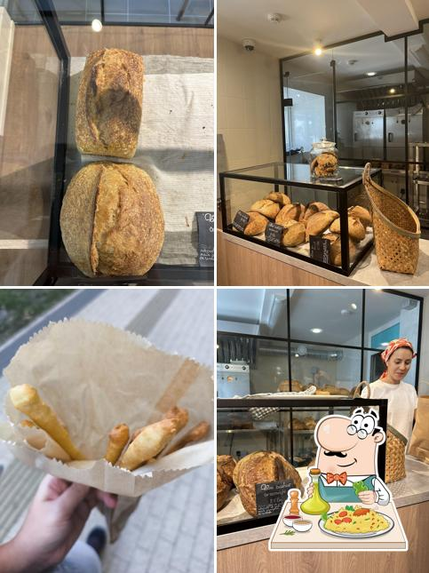
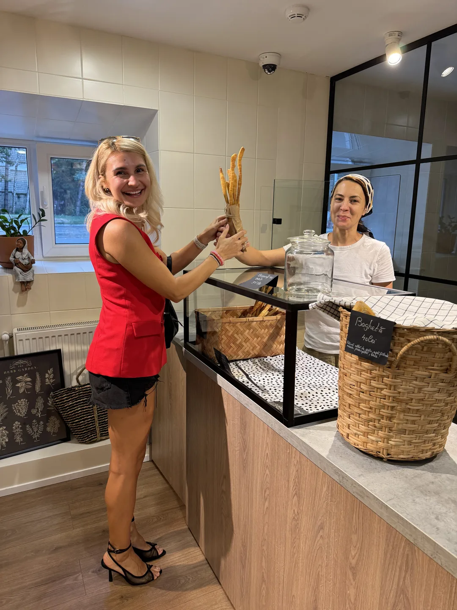

Pâine cu maia
Crustă rumenită, miez cu caracter și gustul pe care îl aduce fermentația naturală. Pâine pentru mesele de fiecare zi.

Chișinău · Din septembrie 2024
Maia sălbatică, mâini pricepute și timp. Lucruri simple, din care coacem ceva deosebit.
O selecție mică. Toată grija, în fiecare produs.

Maia sălbaticăFermentație naturală, gust autentic
Ingrediente aleseCalitatea începe cu ce punem în aluat
Proaspăt, în loturi miciAtenție la fiecare pâine și fiecare detaliu
Alegem să facem puține lucruri, cu multă grijă. De la prima felie de pâine până la ultima firimitură dulce.

Crustă rumenită, miez cu caracter și gustul pe care îl aduce fermentația naturală. Pâine pentru mesele de fiecare zi.
Aromă caldă de scorțișoară și o textură delicată. Unul dintre motivele pentru care clienții noștri revin.
O mică bucurie lângă cafea sau pentru mai târziu. Descoperă și celelalte produse de patiserie din brutărie.
Coacem în cantități mici. Sună-ne pentru selecția disponibilă astăzi.
+373 795 88 518
O brutărie mică.Miez este o brutărie artizanală dedicată celor care iubesc pâinea autentică, făcută din maia sălbatică. La Miez, coacem cu pasiune produse proaspete, folosind ingrediente de calitate și rețete tradiționale.
Fiecare pâine este frământată și dospită cu grijă, oferind o textură unică și un gust desăvârșit. Venim în întâmpinarea iubitorilor de gusturi autentice și sănătoase, aducând pe masa dumneavoastră bucuria unui produs natural și plin de savoare.
Vă așteptăm să descoperiți savoarea Miez, brutăria care transformă simplitatea în artă!
Din viața brutăriei, pe InstagramCinci recenzii de 5 stele, lăsate de clienții noștri pe Google Maps.
Recenziile sunt păstrate în limba lor originală.
Pentru produse disponibile și modificări de program, sună-ne sau urmărește-ne pe Instagram.